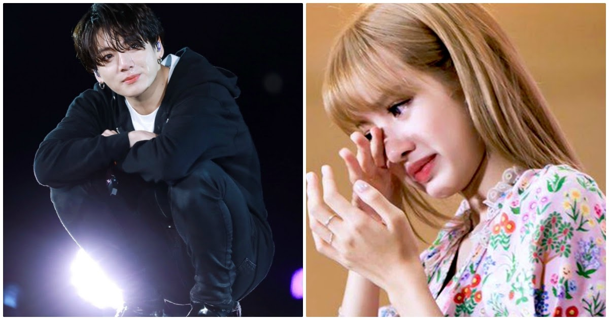
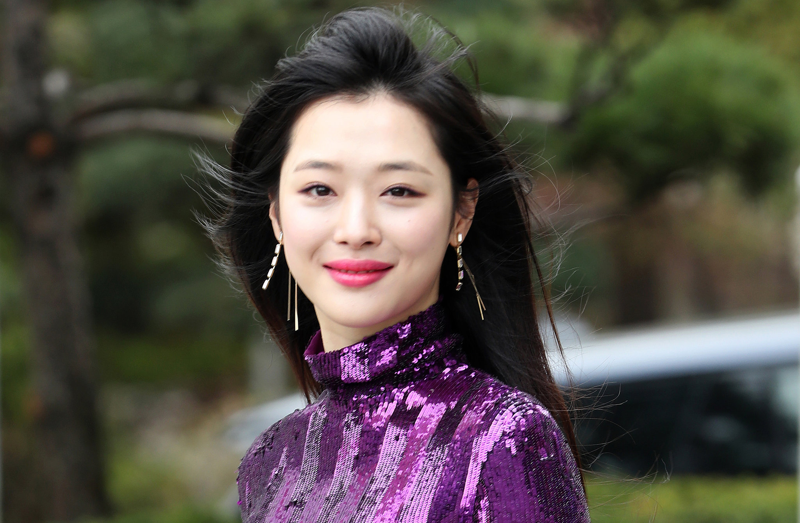
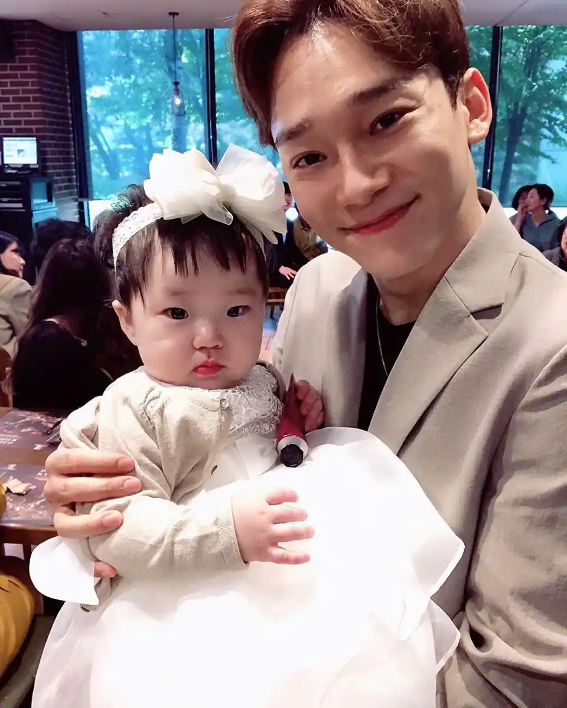
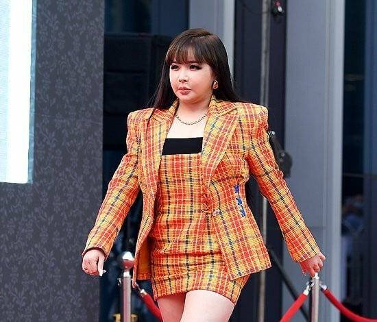
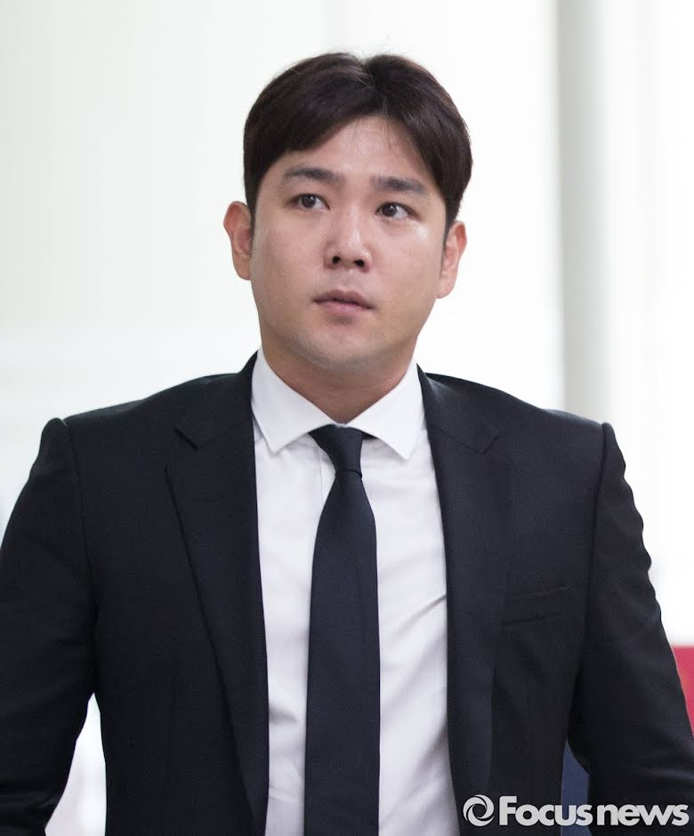
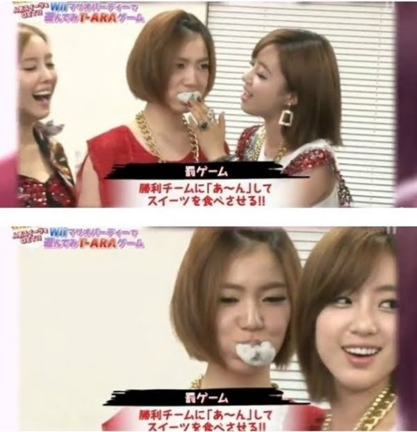

<html>

<head>
<title> MY THIRD WEB PAGE </title>
</head>

<body style="background-color: #add8e6;">

</body>
</html>

<center> <h1> <font color=black size=10 face="Times New Roman">"Factors that could ruin the careers of K-pop idols" </h1> <center> 

<center>  

<body>

    <header>
        <h1><font color=black size=7  face="Times New Roman"> 1.CYBERBULLYING</h1>

	<center> <p align=justified> <font color=black size=3 face="arial"> Sulli's death was linked by various media outlets to depression caused by cyberbullying. Prior to her death, it was revealed that Sulli had repeatedly asked her agency, SM Entertainment, to take strong measures against the malicious comments and cyberbullying.</font> </center> </p>

<center> 


	<center> <p align=justified> <font color=black size=3 face="arial"> Lisa has been a victim of racism just because she was Thai. The first one was in 2019, a Korean fan commented this about Lisa under her post: “With make-up on, she totally looks like a Russian elf … but with darker hair and no make-up, she looks like any average Thai woman.” More recently, the hashtag RespectLisa was trending on Twitter because there was a groupchat consisting of hateful, mean, and racist comments towards Lisa, discrediting her hard work and elegating her success to underhanded means.</font> </center> </p>


	<header>
        <h1><font color=black size=7  face="Times New Roman"> 2.DATING</h1>

	<center> <p align=justified> <font color=black size=3 face="arial"> K-Pop idols dating has always been a strange topic, as some believe that idols shouldn’t date for the “sake of their fans”. EXO‘s Chen recently announced that he was going to get married and become a father. While many fans were supportive of him, some Korean “fans” boycotted him for being in a relationship and stated that he should get kicked out of the group. However, this boycott didn’t end up working, as SM Entertainment made a statement on how Chen would be staying with EXO.
</font> </center> </p>

<center> 

		<header>
        <h1><font color=black size=7  face="Times New Roman"> 3.USING DRUGS</h1>

	<center> <p align=justified> <font color=black size=3 face="arial"> Drugs are also something that is looked at negatively by netizens. Park Bom is someone who had her career greatly impacted due to a drug scandal. In 2010, Park Bom was charged with trying to smuggle in amphetamine tablets from the United States. While amphetamine is legal in the United States, it’s illegal in Korea. Even though Park Bom showed medical proof that showed her long history with the prescription meds, netizens still bashed her. It got to the point where Park Bom was practically forced to go into hiatus due to the backlash.
</font> </center> </p>

<center> 

<header>
        <h1><font color=black size=7  face="Times New Roman"> 4.DUI</h1>

	<center> <p align=justified> <font color=black size=3 face="arial"> There have been plenty of cases when idols had to leave their groups due to a DUI. Former Super Junior member Kangin got involved in a DUI in 2009, and his image took a major fall. He then got involved in another DUI in 2016, and he was immensely criticized by netizens, as they believed this showed that he never reflected on his actions. All of this eventually forced Kangin to leave Super Junior.
</font> </center> </p>

<center> 

	<header>
        <h1><font color=black size=7  face="Times New Roman"> 5.BULLYING</h1>

	<center> <p align=justified> <font color=black size=3 face="arial"> Netizens and fans view bullying scandals seriously, as many idols have had their careers ruined due to them. One of the most famous cases is when netizens believed that former T-ara member Hwayoung was bullied by the other members. One piece of “proof” was when Eunjung forcefully fed Hwayoung a rice cake. Despite T-ara explaining the situation, netizens grew furious at the members and criticized them for their behaviors. T-ara’s popularity went plummeting down, and they never recovered their popularity after this incident. People would later come out and reveal that this was all a lie and that Hwayoung was the actual bully in the group.
</font> </center> </p>

<center> 


